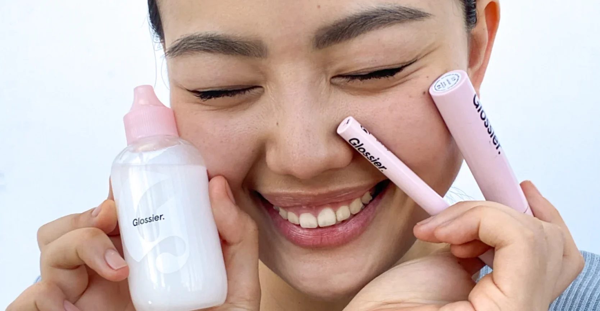

Glossier’s social impact initiatives focus on advancing equity, inclusion, and authenticity within the beauty industry. Through its "Glossier for Good" program, the brand supports underrepresented groups and promotes positive change. Their expansive "Feeling Like Glossier" campaign shifts away from traditional beauty advertising, highlighting real people and emotions over appearances. The brand also drives inclusivity through its annual Grant Program for Black-Owned Beauty Businesses, offering funding, mentorship, and resources to help change industry perceptions and address fundraising inequalities.
Glossier's "Feeling Like Glossier" campaign marks the brand's most expansive marketing effort to date. Departing from traditional beauty advertising, the campaign emphasizes emotions over appearances, spotlighting real individuals—including Glossier's own employees and social media followers. This initiative extends beyond digital platforms, featuring out-of-home placements in New York City and, for the first time, broadcast television spots on ABC. The campaign underscores Glossier's commitment to authenticity and inclusivity, aiming to resonate with consumers on a more personal level.
feeling like glossier playlistGlossier is advancing inclusivity in the beauty industry through its annual Grant Program for Black-Owned Beauty Businesses, offering $300,000 in funding, mentorship, and access to a network of industry leaders. Since 2020, the program has supported over 30 founders from 26 brands, aiming to address fundraising inequities and change beauty perceptions. The program provides selected brands with business development courses and executive mentorship, fostering diversity and equity within the beauty sector.

Winner of the Alumni Award: Range Beauty
Founder: Alicia Scott
Range Beauty, founded by Alicia Scott, creates high-performance makeup designed for sensitive skin, inspired by her own struggles with eczema and acne. As the first winner of Glossier’s Alumni Award, Range has been steadily growing and forming transformative partnerships—Glossier is excited to support Alicia as she takes her brand to new heights.

Glossier for Good is Glossier’s social impact initiative dedicated to advancing equity, inclusion, and opportunity within the beauty industry and beyond. While specific details about the program's activities are not provided in the available information, Glossier for Good likely encompasses efforts such as community engagement, support for underrepresented groups, and initiatives aimed at fostering positive change.